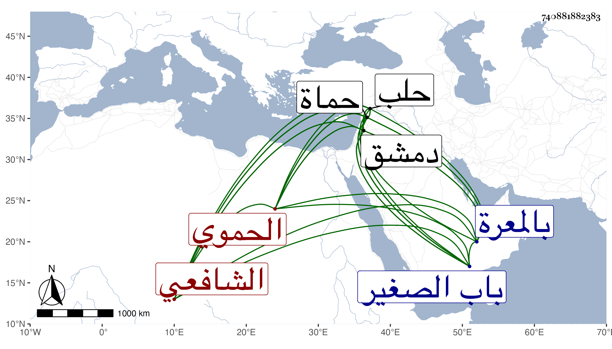

0902Sakhawi.DawLamic.ITO20230111-ara1.EIS1600.740881882383
Biography ID: 740881882383
767
خليل بن محمد بن محمد بن محمود صلاح الدين بن ناصر الدين بن شمس الدين ابن نور الدين الحموي الشافعي عم الجمال محمد الآتي ويعرف بابن السابق . ولد بعيد الثمانين وسبعمائة تقريبا بحماة ، ونشأ بالمعرة لكون أبيه كان مباشرا بها فحفظ القرآن عند الشيخ يوسف الذي ولي قضاءها بعد والتنبيه على قاضيها وعالمها الملحة في النحو والمتقنة في الفرائض ، وتدرب في توقيع الانشاء بقريبه الناصري بن البارزي وفي الحساب بالشرف موسى مستوفي حماة فبرع فيهما جدا وترقى في المحاسن حتى صار من أفراد زمانه ديانة وعقلا وجودة ومروءة ومكارم أخلاق وعفة وعظمة عند الملوك وقد باشر نظر الديوان بحماة فكان النواب من تحت أمره ولا يتقدمه أحد عندهم ومكث في كتابة سرها خمسا وعشرين سنة ، واستقر به الظاهر جقمق لسابق خصوصية له به في نظر جيش حلب فباشرها نحو خمسة أشهر ثم استعفى ، ورجع إلى بلده فأقام بها بطالا نحو سنة ثم ولاه الظاهر أيضا كتابة السر بدمشق في أوائل سنة أربع وأربعين فباشرها نحوا من ثلاث عشرة سنة ، وحمدت مباشراته كلها حتى قال الونائي أنه رجل صالح والله رافقته بدمشق مدة فما سمعته قط يتكلم في دار العدل إلا بما يخلصه من الله تعالى ، وقال لي ابن أخيه والله ما أعلم أنه غش مسلما ولا استشاره أحد إلا وأشار عليه بما يشير به على نفسه وذكر لي من أوصافه ما يشهد لوفور رياسته وديانته ، وقال غيره أنه كان من محاسن الدنيا لما اشتمل عليه من الحشمة والرياسة والتواضع والبشاشة والدين مع حسن الشكل . مات منفصلا عن كتابة السر بعد مرض طويل في جمادى الآخرة سنة تسع وخمسين ودفن بمقبرة باب الصغير وكانت جنازته حافلة رحمه الله وإيانا . وغلط من سماه محمدا .
